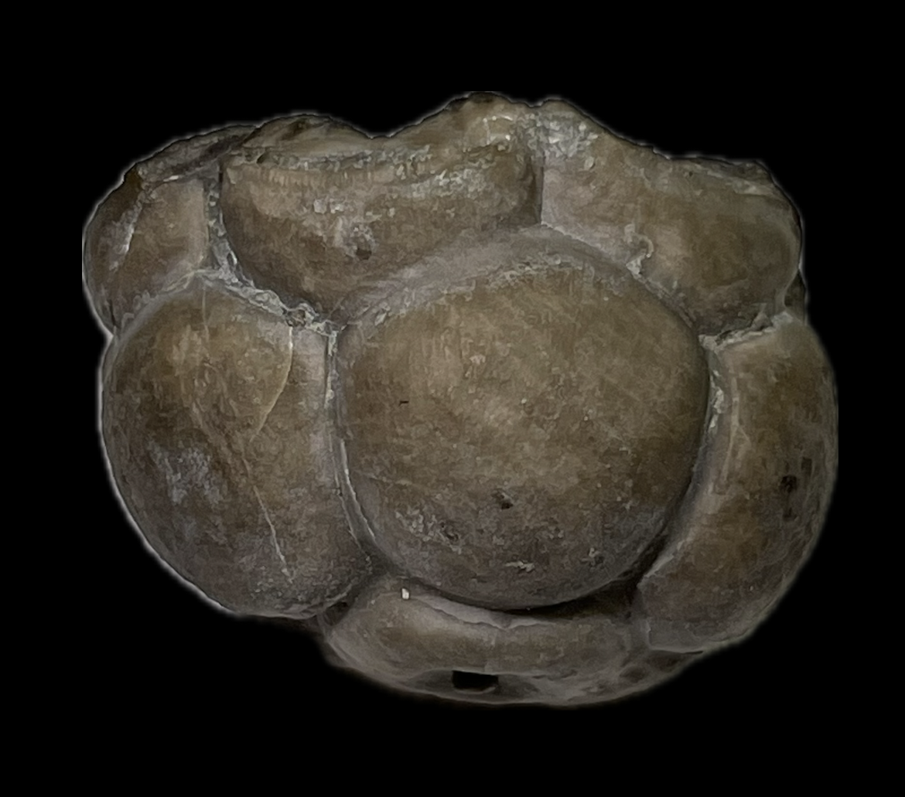
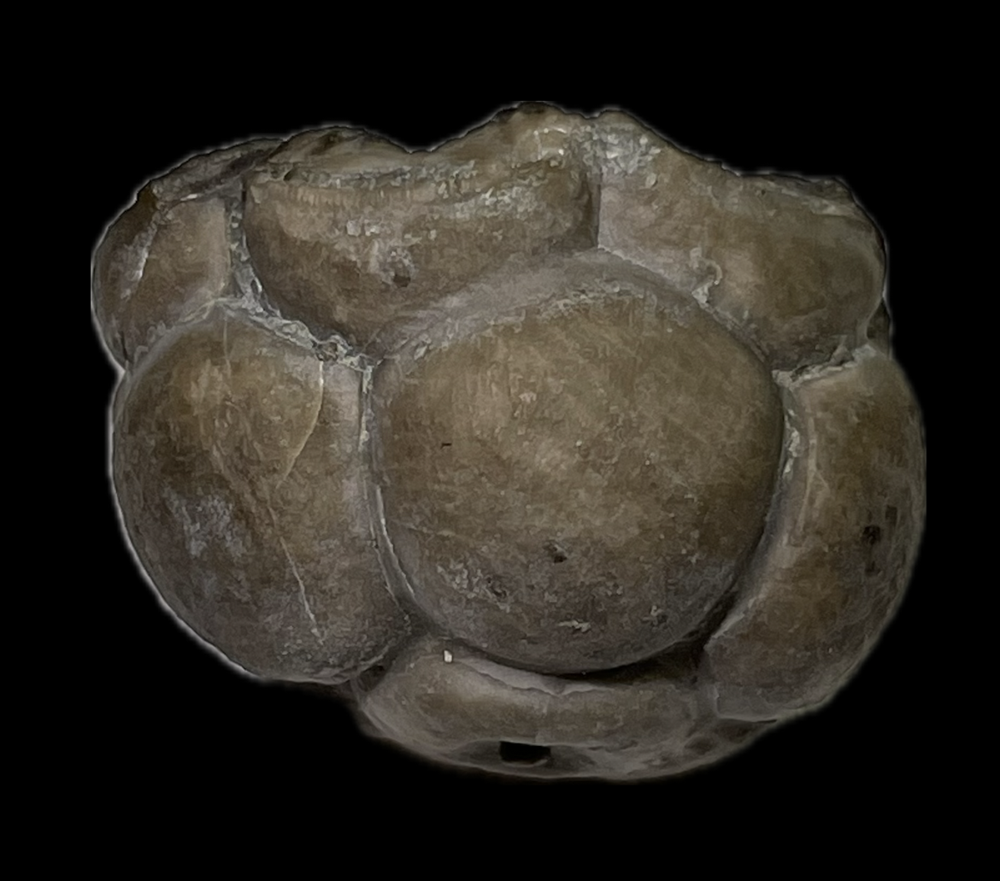

Crinoid
Staphylocrinus bulgeri
• Mississippian
• Pride Mountain Formation
• Morgan County, Alabama, USA
Size: 2.5 cm across
An apparently immature specimen of the stemless crinoid known as Staphylocrinus bulgeri. A portion of the proximal stem is still visible, so this individual may have been buried not long after detaching from its stem and before it was fully engulfed by the growing infrabasals.
 
